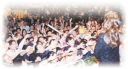

| Reportages spéciaux |
|
|

Le cinquième arrêt de la tournée de conférences 2000 de Maître Suprême Ching Hai en Océanie et en Asie, a eu lieu à Hong Kong le 2 mai. Ce jour-là, une pluie torrentielle a transformé le temps maussade et chaud en un jour frais et rafraîchissant. Malgré la pluie qui persistait toujours en soirée, plusieurs milliers de sincères aspirants de Vérité n'ont pas été dissuadés de venir à la conférence qui s'est déroulée au Queen Elisabeth Stadium, dans le district de Wan Chai.
Au début de l'après-midi, de nombreuses personnes faisaient déjà la queue à l'extérieur du stade. Vers dix-huit heures, le stade était vivement éclairé à l'intérieur et à l'extérieur. La foule impatiente se précipitait à l'entrée du hall et a rempli la salle d'exposition au deuxième étage où les publications, les Bijoux et les Vêtements Célestes de Maître étaient exposés. Tous les spectateurs ont montré une grande admiration et étaient élogieux. Les sièges à l'intérieur du stade ont été entièrement occupés avant dix-neuf heures.
Au milieu de la salle, en hauteur sur un grand écran, une courte vidéo a été projetée présentant Maître : "Suivez le chemin de l'amour". Ensuite, un initié de Hong Kong a partagé avec l'auditoire ce qu'il avait expérimenté sur son chemin spirituel. A ce moment là, Maître est entrée dans la salle d'une manière gracieuse et élégante. Immédiatement, la salle a été inondée d'un tonnerre d'applaudissements. L'auditoire impatient s'est levé pour saluer Maître.
En dépit de la fatigue de Son voyage épuisant, Maître avait toujours une allure détendue et pleine d'humour. L'amour et la miséricorde infinie se dégageaient d'Elle de façon naturelle. Par des mots pleins d'humour et de sagesse Elle a amené l'auditoire tout entier à rire joyeusement et à applaudir sans cesse. Le discours de Maître était vivant, simple et facile à comprendre, dirigé directement vers notre Moi intérieur et notre sagesse. En citant des sages d'autrefois et des situations familières de notre vie quotidienne, Elle a indiqué que même le bonheur le plus grand sur Terre ne peut être comparé avec le vrai bonheur que nous découvrons lorsque nous trouvons notre Moi Originel à l'intérieur en silence. Les pratiquants spirituels se sentent facilement satisfaits car ils sont libres. Ils ne s'attachent pas à la pauvreté ni à la richesse puisqu'ils ont déjà trouvé leur Soi véritable. Elle a donné l'exemple du Bouddha Sakyamuni, qui possédait un immense royaume, toute la gloire et la richesse du monde. Cependant, c'est seulement après avoir obtenu l'illumination parfaite qu'Il a tout possédé et est devenu vraiment riche.
Par des mots pleins d'humour et de sagesse, Maître nous rappelle directement notre Moi et notre Sagesse intérieurs. |
Maître a tendu la main pour montrer qu'obtenir l'illumination est aussi facile que tourner la paume de la main. A travers l'illumination, nous réaliserons que la Nature de Dieu est à l'intérieur de nous, c'est une qualité innée que nous possédons de naissance. C'est seulement par la redécouverte de cela que nous pouvons réaliser que nous avons tous la même Nature de Dieu et que nous sommes originellement un sans aucune discrimination entre l'ami et l'ennemi ou entre moi et vous. Alors nous deviendrons véritablement paisibles et harmonieux, et cela apportera la paix réelle dans le monde.
Supposons que nous avons blessé sans faire attention notre doigt ou une certaine partie de notre corps. Cette partie blessée nous ennuiera toute la journée et ne nous permettra pas de manger ou dormir tranquillement. Cependant, ce n'est pas une raison pour couper cette partie, au contraire, nous devons essayer de la guérir. Après avoir trouvé notre Nature de Dieu, il est facile d'aimer notre ennemi. Tout est facile. Nous sommes heureux de vivre dans un château luxueux ou sous une tente. Nous sommes à l'aise avec la richesse aussi bien qu'avec la pauvreté. Nous nous sentons grands avec des habits extravagants ou des vêtements simples. Rien ne peut troubler notre coeur. C'est pour cela que Bouddha Sakyamuni nous a dit que toutes choses sur Terre sont des illusions, seul trouver notre vrai Moi est éternel. Jésus Christ nous a aussi appris que notre trésor n'est pas dans ce monde, mais dans le royaume céleste, éternel. Nous dirigeons toujours notre attention vers l'extérieur. C'est pourquoi nous oublions notre Vrai Moi. Tant que nous regarderons à l'intérieur nous saurons que nous sommes Dieu. Il y a une phrase dans les textes Bouddhistes : "Déposez votre couteau d'abattage et devenez Bouddha instantanément." En fait, en renonçant tout simplement à ce monde, nous entrons immédiatement au royaume de Dieu. Le Paradis est à l'intérieur de nous. Nous pouvons le trouver aussitôt que nous atteignons l'intérieur.
 Bien que la conférence de Maître n'ait pas été longue, Son discours simple mais profond était d'une puissance exceptionnelle. Des centaines de personnes ont reçu l'initiation immédiatement après la conférence. Il y a même eu un journaliste de presse qui a demandé à apprendre la Méthode Pratique après avoir écouté la conférence. Il y avait non seulement des habitants de Hong Kong et des étrangers d'autres pays, mais aussi de nombreux aspirants véritables venus également de différentes régions de la Chine continentale, y compris des personnes âgées et des enfants.
Après l'initiation, tous les nouveaux pratiquants Guan Yin rayonnaient de bonheur infini et de satisfaction. Un jeune initié, de la province de Guangdong en Chine, ressemblait exactement au jeune Bouddha Maitreya avec son visage dodu et souriant. Une petite fille qui a eu de très bonnes expériences pendant l'initiation nous a dit qu'elle a adoré l'initiation, elle s'est sentie vraiment bénie de pouvoir voir notre magnifique Maître en personne. Il y avait aussi des personnes qui sont venues de très loin, accompagnées par leurs parents initiés, pour obtenir l'initiation. Leurs visages montraient clairement leur joie. Ayant reçu l'initiation et réjouis de merveilleuses expériences, ils ont dit qu'ils avaient oublié toutes les épreuves de leur voyage et seule la gratitude restait dans leur coeur.
La bénédiction de Maître englobe tous les êtres sensibles. Elle nous réveille pour que nous puissions nous échapper du monde illusoire et trouver notre vrai Moi et la Nature de Dieu. Elle nous permet de réaliser vraiment que toutes les créatures sont une et de reconnaître l'amour véritable qui existe à l'intérieur de nous depuis le commencement des temps.
Les conceptions artistiques de Maître évoquent silencieusement la beauté de la Vérité. | Les gens désirent avidement avoir plus d'information sur les enseignements de Maître |
|
|